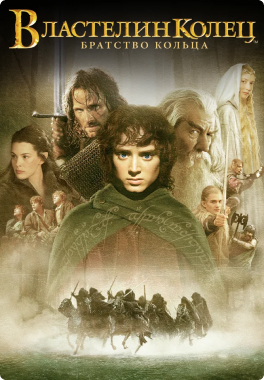

The film takes the viewer to the 70s of the last century. The protagonist organizes an expedition to the Skull island, always covered in fog, on which King Kong was once caught to find the missing brother and some mysterious substance. During...
At first glance, you can decide that Wakanda is an ordinary territory of wild Africa, but this is not so. Here, in the bowels of the desert lands, there are hidden deposits of a unique metal capable of absorbing...
2:32:13
The Dark Knight
Batman raises stakes in the war on crime. With the help of Lieutenant Jim Gordon and Attorney Harvey Dent, he intends to clear the streets of crime that is poisoning the city. The cooperation is effective, but soon they...
1:53:45
The Gentlemen
One cunning American, from his student years, had been selling drugs, and now he came up with a scheme of illegal enrichment using the estates of an impoverished English aristocracy and made a very good fortune on ...

2:58:20
The Lord of the...
Tales of Middle-earth is a chronicle of the Great War for the Ring, a war that lasted more than one thousand years. The one who owned the Ring received power over all living creatures, but was obliged to serve evil...